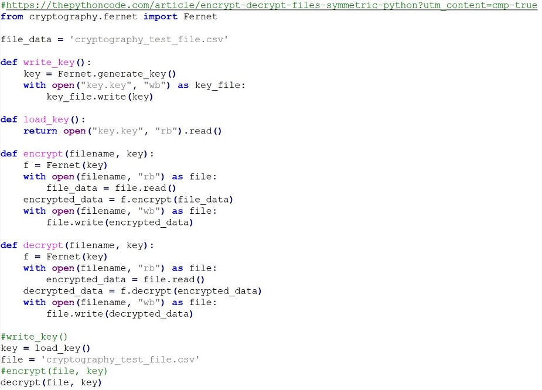
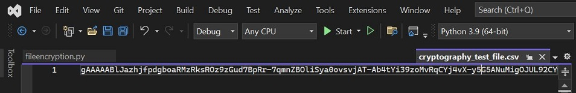

Cryptography
The exercise was to create a python program using a cryptography algorithim to encrypt and decrypt a text file.
Question 1
Why did you select the algorithm you chose? I chose to implement this code using the Fernet python library and using symmetric encryption on top of an AES algorithim. For the purposes of the code the use of symmetric encryption proved to be a more practical way of encryption by utilising the same key for both encryption and decryption. The choice however of using AES encryption was based on its inclusion in the ISO/IEC 18033-3 standard. Additionally it is the only public accessible cipher approved by the U.S. National Security Agency (NSA).
Question 2
Would it meet the GDPR regulations? Depndent on which GDPR model you are using (UK, EU or indeed other global data protection standards) it appears that the algorithim does meet GDPR regulations. The Data Protection Act 2018 and the General Data Protection Regulation (GDPR) states that information must is used fairly, lawfully and transparently. With the correct development the use of the Fernet cryptography and the full encryption of file and contents meets this. While not dealing with specific pieces of data in the file but encrypting the whole file there is less risk of other Personal Identifiable Data (PID) within the file been exposed. Full data could be encrypted at rest and only decrypted for the purposes of read or write transactions by back end code. There are other standards, algorithims and ciphers avaialable that organisations would prefer to use from a security perspective. There is a dependency here on risk, cost, human factors and the criticality of data when developing software and the data protection principles to be applied.
Source Code
Decrypted File

Encrypted File
References:
Junestam, A. and Guigo, N. (2014) Open Crypto Audit Project TrueCrypt.
Cryptography with Python. Available from: https://www.tutorialspoint.com/cryptography_with_python/cryptography_with_python_quick_guide.htm [Accessed 30 September 2023].
How to Encrypt and Decrypt Files in Python. Available from: https://thepythoncode.com/article/encrypt-decrypt-files-symmetric-python?utm_content=cmp-true [Accessed 30 September 2023].